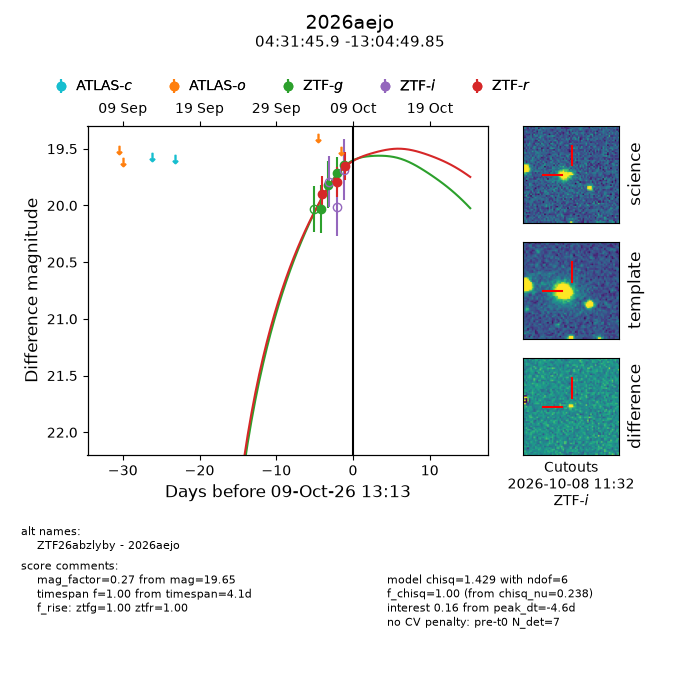
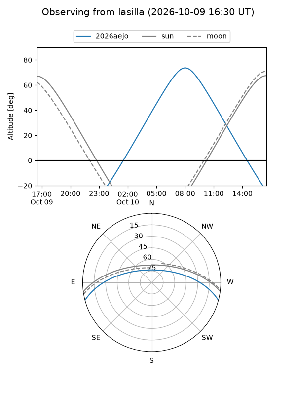
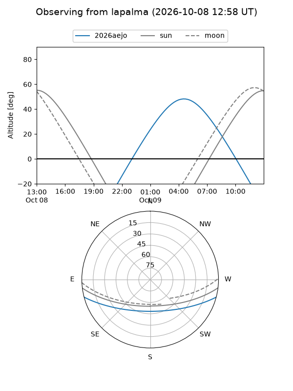
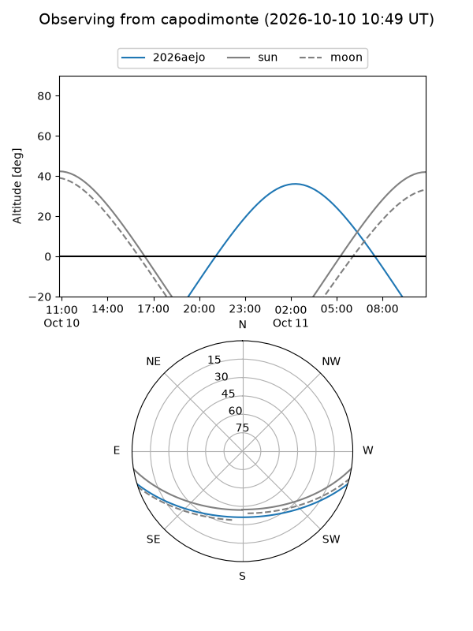
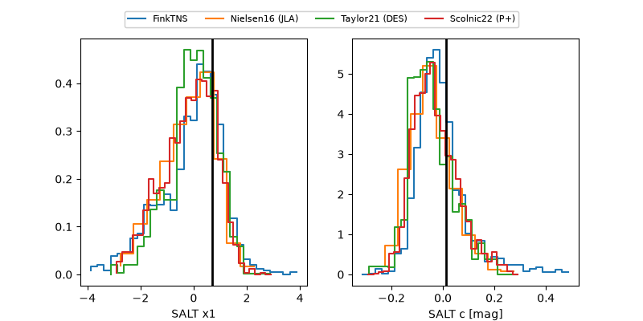

2026aejo
Target 2026aejo at 2026-10-09 13:16
Aliases and brokers:
FINK-ZTF: ztf.fink-portal.org/ZTF26abzlyby
Lasair-ZTF: lasair-ztf.lsst.ac.uk/objects/ZTF26abzlyby
ALeRCE-ZTF: alerce.online/object/ZTF26abzlyby
YSE-PZ: ziggy.ucolick.org/yse/transient_detail/2026aejo
TNS name: wis-tns.org/object/2026aejo
Direct TNS query: direct search
alt names
ZTF26abzlyby (ztf,fink_ztf)
2026aejo (tns,yse)
Coordinates:
equatorial (ra, dec) = 67.9411,-13.08051
equatorial (HMS+DMS) = 04:31:45.87,-13:04:49.85
galactic (l, b) = (209.1487,-36.82812)
Flags:
peak dt: -4.6
Photometry:
last ztfg=19.65, ztfr=19.65
4 ztfg, 3 ztfr detections
Lightcurve

Visibility



Additional plots
